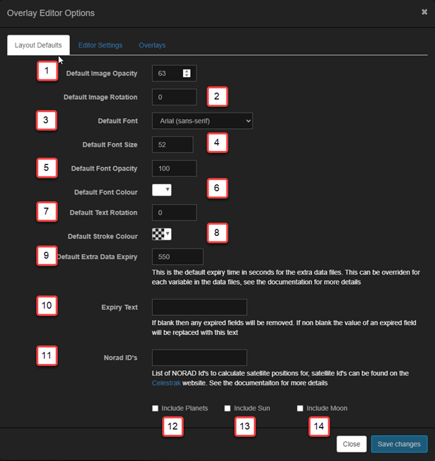

What are overlays?
An overlay is information that is added, i.e., overlayed, on top of each captured image. This often includes the time the image was taken, the sensor temperature, and the exposure length, but can include any other text or images you want.
Allsky has always had the ability to add text to the captured image but in a very limited way. There are now two ways to add an overlay. You choose the method via the Overlay Method setting in the WebUI's Allsky Settings page.
- The newer overlay method has many new features and is significantly more flexible than the older method. For example, you can add an overlay ONLY to the live image but not to saved images. You can also easily add images and text using a drag-and-drop method.
- The legacy method is what's been in Allsky since it began. It allows only text to be placed in a single location with limited formatting.
The overlay method will be the default in the next version of Allsky, and will be the ONLY method in the version after that.
New Overlay Method
The overlay method allows almost any piece of information to be added to the captured Allsky image. Some of the key features of the include:
- Overlay Editor - The web page for managing overlays:
- Drag and Drop interface - Fields can be dragged around the screen to position them.
- Customisable Interface - The Overlay Editor user interface can be highly customised to your requirements.
- Font Manager - You can upload any TrueType font and use it in the overlays, or use any font already on your Pi.
- Variable Manager - Provides a library of fields that you can add to the image. You can also add your own fields.
- Image Manager - Allows you to upload and manage images you wish to add to the image.
- Text Fields - This allows text to be added to the image.:
Key features include:
- Ability to add any data from Allsky to the image
- Ability to add custom (extra) data to the image
- Any TrueType font can be used
- Text can be any colour or size
- Text can be rotated
- Image Fields - This allows images to be added to the image:
- Any image can be uploaded
- Images can be scaled and rotated and their opacity changed
How overlays work
The Overlay Editor is what you use to define what information you want on the captured images and where it should go. Once you have specified that information, you won't use the manager again until you want to change something.
The Overlay Module is invoked every time an image is captured and places the information you specified in the Overlay Editor onto the images. This module is one of several modules that can be invoked after every image is captured.
In order to use the the Overlay Module you must enable it by going to the WebUI and clicking on the Allsky Settings link, then selecting overlay in the Image Overlay setting. This disables all the remaining settings in the Image overlay settings section (you will specify those items in the Overlay Editor).
In the Overlay Editor you specify what information you want to go where, and what it should look like. For example, you want the date and time the image was taken to be in blue, 12 point font in the upper left of the image and a compass rotated 20 degrees so it's pointing north in the upper right of the image. You also have a graph of weather information you want on the bottom of the image, but because it will hide some of the image you want it to be partially transparent.
After Allsky captures an image it passes that image as well as information about the image to the Overlay Module. Examples include the time the image was taken, the exposure length, and the sensor temperature. This information is put into System Variables that can be used per you configuration in the Overlay Editor, which then:
- Replaces the system variables with their values and adds them to the captured image.
- Replaces any module variables with their values and adds them to the captured image.
- Adds any images you specified to the captured image.
Allsky Fields and Variables
The heart of the Overlay Editor is fields. There are two types of fields:
- Text fields consist of text and/or system and module variables.
Variables are enclosed within
${}and replaced with their values before being added to the captured image. - Image fields contain images - pictures, graphics, or anything you want. Common uses are logos, weather graphs, and compasses.
Some example fields and variables are:
| Field | Example Output | Description |
|---|---|---|
${DATE} |
24/10/22 | Displays the date from the DATE system variable. The date can be formatted in a variety of ways, see the section on formatting fields for details. |
Date: ${DATE} |
Date: 24/10/22 | Displays the string "Date: " then the date from the DATE system variable. As above, the date can be formatted in a variety of ways. |
Date: ${DATE} ${TIME} |
Date: 24/10/22 23:12:34 | Displays the date from the DATE system variable and the time from the TIME system variable. Both variables can be formatted in a variety of ways. |
Exposure |
Exposure | Simply displays the text "Exposure". |
Variables can come from a variety of sources:
- Allsky - The main Allsky application generates system variables.
- Modules - Any module can create variables.
- Extra Data - Typically created by an application external to Allsky.
Allsky variables
The table below shows the most commonly used system variables produced by Allsky; a complete list can be found in the Field Manager.
All the variables refer to the current image.
| Variable | Example Data | Description |
|---|---|---|
${DATE} |
20230228 | The date the image was taken. |
${TIME} |
221623 | The time the image was taken. |
${GAIN} |
4.692540 | The gain used for the image. If auto-gain was disabled, this value will be what you set in the Gain setting in the WebUI, otherwise it's the value the auto-gain algorithm used. |
${AUTOGAIN} |
1 | 1 if auto-gain was enabled, 0 if disabled. Taken from the Auto-Gain WebUI setting. |
${sAUTOGAIN} |
(auto) | A string containing either (auto) if auto-gain was
enabled, or blank. Useful to put after the gain, e.g.,
Gain: ${GAIN} ${sAUTOGAIN}. |
${EXPOSURE_US} |
90000000 | The exposure of the image in micro seconds. If auto-exposure was disabled, this value will be what you set in the Manual Exposure setting in the WebUI, otherwise it's the value the auto-exposure algorithm used. |
${sEXPOSURE} |
218 ms (0.2 sec) | The exposure of the image in a human readable format.
The format changes depending on the exposure time,
for example, very short exposures may be
218.48 ms (0.2 sec)
whereas a long exposure may be 45.3 sec.
|
${AUTOEXPOSURE} |
1 | 1 if auto-exposure was enabled, 0 if auto-exposure was disabled. Taken from the Auto-Exposure WebUI setting. |
${sAUTOEXPOSURE} |
(auto) | A string containing either (auto) or blank -
similar to ${sAUTOGAIN}. |
${TEMPERATURE_C} and ${TEMPERATURE_F} |
36 | The temperature of the camera sensor, if available.
This does NOT include the C or F for
centigrade or fahrenheit so you'll need to add them yourself, e.g.,
Sensor Temp: ${TEMPERATURE_C} C. |
${MEAN} |
0.108564 | The mean value brightness for the image. The values for ZWO cameras are from 0 (pure black) to 255 (pure white). The values for RPi cameras are from 0.0 (pure black) to 1.0 (pure white). |
${BRIGHTNESS} |
0 | The brightness you set in the Brightness setting in the WebUI. |
Module variables
Any module can create variables for use in the Overlay Module.
For this reason it is important that the Overlay Module
runs as late as possible within the module flow.
As an example, the Star Count Module creates a
variabled called ${STARCOUNT} and passes it to the next module.
Please refer to the documentation on each module for any variables that it makes available.
Extra Data variables
The legacy overlay method can add "extra data" to captured images but in a limited way via its single Extra Text File setting. The module method provides a more sophisticated method for making even more data available.
This is an advanced topic and as such you will need to have an understanding of the Linux file system and how to manage files within it. The Linux Basics page should provide the Linux understanding you need.
You can have multiple "Extra Text Files" which reside in ~/allsky/tmp/extra and are used to create variables which can then be added to the overlay.
Let's assume you want to add weather data to your images. You first need to create or obtain a program that gathers that data and writes it to a file. How you obtain that file is outside the scope of this documentation, but the program needs to write the data in a specific format in a file called ~/allsky/tmp/extra/xxxxx (replace the xxxxx with an appropriate name). This file can be either a simple text file or preferably a json file since it provides a lot more flexibility.
The extra directory will normally be re-created after every reboot so don't save anything there that needs to remain permanately.
Text Files
Text files must end with a .txt extension. The format is a simple name=value structure as shown below:
| File Contents | Allsky Result | |||||||||||||||
|---|---|---|---|---|---|---|---|---|---|---|---|---|---|---|---|---|
|
|
The data in these files could become 'old' if the application creating them fails or is not running. To allow Allsky to detect this you can tell Allsky to ignore the files in the extra directory when they are over a certain age. For .txt files there is a single value which is specified in the Overlay Editor settings dialog box. See the next section for how to specify the value for .json files.
JSON Files
.json files are more complex in their structure but provide a lot more flexibility for you to add your own variables and even control the attributes of a field.
| This .json file will produce exactly the same variables as the .txt file described above. The data will expire as defined in the Overlay Editor settings dialog. | This .json file includes expiry times (in seconds) for some of the elements. In this case the expiry time for the relevant elements will be used and the Overlay Editor dialog expiry setting for the remaining variables. | This .json file, which has been truncated for brevity, includes all of the attributes that a field can set. It also adds an image. |
|
{
"AGTEMP": {
"value": "14.0C"
},
"AGHUMIDITY": {
"value": "90.1%",
},
"AGHEATERCURRENT": {
"value": "215",
},
"AGSTAT": {
"value": "Night",
},
}
|
{
"AGTEMP": {
"value": "14.0C",
"expires": 600
},
"AGHUMIDITY": {
"value": "90.1%",
"expires": 600
},
"AGHEATERCURRENT": {
"value": "215",
},
"AGSTAT": {
"value": "Night",
},
}
|
{
"AGTEMP": {
"value": "14.0C",
"x": 800,
"y": 200,
"fill": "#333333",
"font": "ledsled",
"fontsize": 40,
"opacity": 0.2,
},
"AGHUMIDITY": {
"value": "90.1%",
},
"AGSCOPE": {
"image": "crosshair.png",
"x": 300,
"y": 400,
"scale": 0.1,
"expires": 6000,
"opacity": 0.5
}
}
This example demonstrates some important points: |
The "extra" files must be created by an application you provide and there are a few things that must be considered when creating these files:
- Variable Names - Since you could end up conflicting with the names
of Allsky system variables it's best to prefix your own variables.
In the examples above the variables are prefixed with
AG(the initials of the person who created the program, but you can use anything). - Permissions - You must ensure that the files created in the
extra directory can be read by Allsky.
It is up to the application creating them to ensure the permissions are correct.
Using
chmod 664should suffice. The Overlay Module will silently ignore any files it cannot read.
The Main Overlay Editor User Interface
The Overlay Editor consists of two key areas: the toolbar and working area. The working area contains the latest image captured in the background.
New fields are initially added to the upper left corner of the overlay but can be moved anywhere you want - just drag and drop!If you added a field by mistake, click on the icon before doing anything else.
| Annotation | Icon | Description |
|---|---|---|
|
This is enabled and turns green when any changes have been made that require saving. The word "Modified" is also appended to the tab label, i.e., "Overlay Editor - Modified". This icon is only enabled when leaving certain fields. For example if you change a field label you must click out of the field before this icon will be enabled. |
||
|
Click to add a new field with text and/or variables to the overlay. |
||
|
Click to add an existing image to the overlay. The image must have previously been uploaded using the Image Manager. |
||
|
Click to delete the selected field. The "del" or "delete" keys on the keyboard can also be used. The icon is only enable turns green when a field is selected. |
||
|
Click to add a pre-defined field from the Variable Manager. |
||
|
Click to display sample data in each of the fields. This is useful to see what actual data will look like on the overlay so you can better align fields. |
||
|
Click to zoom in on the image. |
||
|
Click to zoom out of the image. |
||
|
Click to zoom to the full size of the image. |
||
|
Click to zoom to fit the image on the screen. |
||
|
Displays the Font Manager. See the Font Manager section for more details. |
||
|
Displays the Image Manager. See the Image Manager section for more details. |
||
|
Displays the Overlay Editor settings dialog which allows you to change settings of the manager itself. See the Overlay Editor Settings section for more details. |
||
|
The main working area. The image here is the last one captured by Allsky It's best to create overlays when Allsky is running since you will have access to the latest image. Whilst there is nothing stopping you creating overlays when Allsky is not running bear in mind that you may not be using all of the available screen area since the Notification images (e.g., "Allsky is starting") may be smaller than those captured by your camera. |
Using The Overlay Editor
This sub-section details the basic operation of the Overlay Editor and how to manage fields and their contents.
The Font Manager
The Font Manager supports all mainstream browser fonts and allows you to upload any TrueType font for use in text fields.

|
|
To use a font it must be installed in the Font Manager and there are two ways to do this, as described next.
- Add font from daFont.com
In a separate browser window, navigate to the font page on http://daFont.com that you wish to install, for example https://www.dafont.com/led-sled.font. Copy the font URL to the clipboard. Click the Add Font button and enter the font URL. The font will be installed and the installed fonts list refreshed. - Upload font via a zip file
First ensure that the font(s) you wish to installed are contained within a zip file. You can create the zip file yourself or download from a place like https://fonts.google.com/. Click the Upload Font button and browse to the zip file. The fonts will be extracted from the zip file and installed.
When installing fonts if any issues arise the Font Manager will display a notice indicating why the font(s) could not be installed.
The Image Manager
The Image Manager allows you to upload images for use on overlays. Allsky comes with several basic images.
|
Adding fields to the overlay
There are three ways to add fields to the overlay, two for text fields and one for images.
- Add a new text field
Click the Add New Text Field icon () on the toolbar to display the Text Properties Editor. Enter some text and/or variables in the Item field of the editor, and set its properties as desired. The property editors are described below. - Add a pre-defined variable in a new field
Click the Variable Manager icon () to display the Available Variables list and navigate to the variable you require. Click the button to add the variable to the overlay. The field will start off with just the variable you selected; you can add text or other variables to the field later. See the Variable Manager section for information on other items in this dialog box. - Add a pre-defined image in a new field
Click the Add Existing Image icon () to display the Image Properties dialog box. Select the image you want from the drop down and then move it to the overlay, resizing and rotating as required. The image must have first been uploaded via the Image Manager as described above. The property editors are described below.
The property editors
The property editors allow modifying properties of text and image fields.
Text Properties Editor
 |
The properties in this editor are:
When using the 'Extra Data' files in json format all of the attributes can be overridden in the .json file allowing for external control of how fields appear. For example, you may want the CPU temperature to turn red if it gets too hot. |
Image Properties Editor
 |
The properties in this editor are:
|
Variable Manager
The Variable Manager provides a mechanism for storing variables and text to create fields. Allsky ships with a default set of variables but this can be amended as required.
This manager provides a quick method for storing details of the available variables and adding them to the overlay. The manager comes preinstalled with a set of system variables that can be modified but not deleted. You can also add your own variables to the manager; typically these will come from modules or extra data files.
The manager consists of two tabs. The first, Allsky Variables is the library of available variables and the second, All Variables is a list of all variables.
Allsky Variables tab
|
This tab shows all variables available to use on overlays. Three icons are available for each variable.
The 'Add Variable' button allows you to add your own variables and will display the 'Add Variable' dialog box for entering information about the variable. The search option can be used to quickly search for a variable by name. The search is not case sensitive. |
All Variables tab

|
Sometimes it can be hard to find variables from newly added modules or extra data. This tab lists every variable that Allsky can see and the last value it had. This list provides a faster way to add variables.
If the add button is disabled then the variable is already in the 'Allsky Variables' list. IMPORTANT: This list is only populated if the debug mode is enabled for the Overlay Module in the Module Manager. |
The Add/Edit Variable dialog box
Clicking on the Add Variable button or the icon brings up a dialog box to add or edit a variable. It's the same dialog box in either case, just with a different title. Editing a System Variable will display a message stating that in the dialog box as shown in the image below.
|
Formatting Variables
Date, Time, and Number fields can be formatted to alter their appearance. Each field type has a different set of codes for formatting. The codes are loosely based on Python.
Number formats
| Directive | Meaning | Output Format |
|---|---|---|
| %0f | Formats a number to 0 decimal places | 2 |
| %2f | Formats a number to 2 decimal places | 2.00 |
Date and Time formats
| Directive | Meaning | Output Format |
|---|---|---|
| %a | Abbreviated weekday name. | Sun, Mon, ... |
| %A | Full weekday name. | Sunday, Monday, ... |
| %w | Weekday as a decimal number. | 0, 1, ..., 6 |
| %d | Day of the month as a zero added decimal. | 01, 02, ..., 31 |
| %-d | Day of the month as a decimal number. | 1, 2, ..., 31 |
| %b | Abbreviated month name. | Jan, Feb, ..., Dec |
| %B | Full month name. | January, February, ... |
| %m | Month as a zero added decimal number. | 01, 02, ..., 12 |
| %-m | Month as a decimal number. | 1, 2, ..., 12 |
| %y | Year without century as a zero added decimal number. | 00, 01, ..., 99 |
| %-y | Year without century as a decimal number. | 0, 1, ..., 99 |
| %Y | Year with century as a decimal number. | 2013, 2019 etc. |
| %H | Hour (24-hour clock) as a zero added decimal number. | 00, 01, ..., 23 |
| %-H | Hour (24-hour clock) as a decimal number. | 0, 1, ..., 23 |
| %I | Hour (12-hour clock) as a zero added decimal number. | 01, 02, ..., 12 |
| %-I | Hour (12-hour clock) as a decimal number. | 1, 2, ..., 12 |
| %p | Locale's AM or PM. | AM, PM |
| %M | Minute as a zero added decimal number. | 00, 01, ..., 59 |
| %-M | Minute as a decimal number. | 0, 1, ..., 59 |
| %S | Second as a zero added decimal number. | 00, 01, ..., 59 |
| %-S | Second as a decimal number. | 0, 1, ..., 59 |
| %f | Microsecond as a decimal number, zero added on the left. Please note that Allsky's times are only to the nearest second. | 000000 ... 999999 |
| %z | UTC offset in the form +HHMM or -HHMM. | +0100 |
| %Z | Time zone name. | Europe/London |
| %j | Day of the year as a zero added decimal number. | 001, 002, ..., 366 |
| %-j | Day of the year as a decimal number. | 1, 2, ..., 366 |
| %U | Week number of the year (Sunday as the first day of the week). All days in a new year preceding the first Sunday are considered to be in week 0. | 00, 01, ..., 53 |
| %W | Week number of the year (Monday as the first day of the week). All days in a new year preceding the first Monday are considered to be in week 0. | 00, 01, ..., 53 |
Overlay Editor Settings
Clicking on the Layout and App Options icon in the toolbar brings up the Overlay Editor Options dialog box to manage settings for overlays and the Overlay Editor itself. The dialog box has two tabs, as detailed below.
Layout Defaults tab
These settings apply to overlay layouts.
|  |
|
The Norad satellite and Planet options can be CPU intensive and are disabled by default. When enabling these please use the Module Manager's "Debug Mode" to ensure these settings are not causing an issue with the performance of the image capture process. Details of how to use the Module Manager's "Debug Mode" are covered in the Module Manager page.
Editor Settings tab
The editor settings apply to the Overlay Editor.

|
|
When changing the opacity settings you may need to click somewhere in the overlay in order for the opacity change to take affect.
Sun / Moon / Planets / Satellites
The Overlay Module can generate data for celestial bodies. All calculations are based upon the Latitude and Longitude in the WebUI.
Because creating this data is CPU intensive, it is only created if the associated options are selected in the Layout Defaults tab of the Overlay Editor settings.
The Sun
Various timings are generated for sunrise/sunset etc. All Sun times during daytime capture are for the current day. During nighttime capture:
- Prior to midnight sunset times are for the current day and sunrise times are for the next day.
- After midnight sunset times are for the previous day and sunrise times are for the current day.
There are times when there is no Astronomical darkness.
In these cases ${SUN_NIGHT} and ${SUN_NIGHTEND}
are set to the value defined in the
Overlay Module settings,
in the Module Manager.
The following Sun-related variables are available in the Variable Manager:
| Variable | Description |
|---|---|
| ${SUN_AZIMUTH} | The Azimuth of the Sun with respect to the Allsky camera location. |
| ${SUN_ELEVATION} | The Elevation of the Sun with respect to the Allsky camera location. |
| ${SUN_DARKEST} | Darkest moment of the night, Sun is in the lowest position. |
| ${SUN_NIGHTEND} | Morning astronomical twilight starts. |
| ${SUN_NAUTICALDAWN} | End of Civilian twilight. |
| ${SUN_DAWN} | Morning nautical twilight ends, morning civil twilight starts. |
| ${SUN_SUNRISE} | Top edge of the sun appears on the horizon. |
| ${SUN_SUNRISEEND} | Sunrise ends (bottom edge of the Sun touches the horizon). |
| ${SUN_NOON} | Solar noon (Sun is in the highest position). |
| ${SUN_SUNSETSTART} | Sunset starts (bottom edge of the Sun touches the horizon). |
| ${SUN_SUNSET} | Sunset (Sun disappears below the horizon, evening civil twilight starts). |
| ${SUN_DUSK} | Dusk (evening nautical twilight starts). |
| ${SUN_NAUTICALDUSK} | Nautical dusk (evening astronomical twilight starts). |
| ${SUN_NIGHT} | Night starts (dark enough for astronomical observations). |
The Moon
The following Moon-related variables are available in the Variable Manager:
| Variable | Example Value | Description |
|---|---|---|
| ${MOON_AZIMUTH} | 262° | Azimuth of the Moon. |
| ${MOON_ELEVATION} | -24.65° | Elevation of the Moon. |
| ${MOON_ILLUMINATION} | 7.3 | Illumination of the Moon in %. |
| ${MOON_SYMBOL} | Using this variable in the "moon_phases" font will display a symbol of the current phase of the Moon. |
The planets
The following planet-related variables are available in the Variable Manager:
| Variable | Example Value | Description |
|---|---|---|
| ${MERCURYALT} | -27deg 06' 55.2" | The altitude of Mercury in degrees. |
| ${MERCURYAZ} | 292deg 07' 41.6" | The azimuth of Mercury. |
| ${MERCURYVISIBLE} | No | Yes/No to indicate if Mercury is visible. This does NOT mean its visible to the naked eye just that its above the horizon. |
| ${VENUSALT} | -25deg 03' 52.8" | The altitude of Venus in degrees. |
| ${VENUSAZ} | 282deg 23' 21.9" | The azimuth of Venus. |
| ${VENUSVISIBLE} | No | Yes/No to indicate if Venus is visible. This does NOT mean its visible to the naked eye just that its above the horizon. |
| ${MARSALT} | 03deg 56' 06.7" | The altitude of Mars in degrees. |
| ${MARSAZ} | 55deg 12' 53.7" | The azimuth of Mars. |
| ${MARSVISIBLE} | Yes | Yes/No to indicate if Mars is visible. This does NOT mean its visible to the naked eye just that its above the horizon. |
| ${JUPITERALT} | 29deg 49' 30.9" | The altitude of Jupiter in degrees. |
| ${JUPITERAZ} | 142deg 19' 20.8" | The Azimuth of Jupiter. |
| ${JUPITERVISIBLE} | Yes | Yes/No to indicate if Jupiter is visible. This does NOT mean its visible to the naked eye just that its above the horizon. |
| ${SATURNALT} | 20deg 50' 21.6" | The altitude of Saturn in degrees. |
| ${SATURNAZ} | 187deg 21' 15.3" | The Azimuth of Saturn. |
| ${SATURNVISIBLE} | Yes | Yes/No to indicate if Saturn is visible. This does NOT mean its visible to the naked eye just that its above the horizon. |
| ${URANUSALT} | 21deg 21' 51.3" | The altitude of Uranus in degrees. |
| ${URANUSAZ} | 90deg 10' 23.5" | The azimuth of Uranus. |
| ${URANUSVISIBLE} | Yes | Yes/No to indicate if Uranus is visible. This does NOT mean its visible to the naked eye just that its above the horizon. |
| ${NEPTUNEALT} | 29deg 43' 44.2" | The altitude of Neptune in degrees. |
| ${NEPTUNEAZ} | 150deg 24' 55.8" | The azimuth of Neptune. |
| ${NEPTUNEVISIBLE} | Yes | Yes/No to indicate if Neptune is visible. This does NOT mean its visible to the naked eye just that its above the horizon. |
| ${PLUTOALT} | 10deg 07' 14.9" | The altitude of Pluto in degrees. |
| ${PLUTOAZ} | 207deg 49' 18.1" | The azimuth of Pluto. |
| ${PLUTOVISIBLE} | Yes | Yes/No to indicate if Pluto is visible. This does NOT mean its visible to the naked eye just that its above the horizon. |
Satellites
The Overlay Module can generate position elements for satellites. To enable this enter a comma-separated list of NORAD IDs in the Overlay Editor's "Norad IDs" setting.
To find NORAD IDs browse to the Celestrak website and search for the desired objects.

|
This example has two Norad IDs:
|
This will generate the following variables that can be used in overlays. Other NORAD IDs would produce similar variables starting with IDs.
| Variable | Example Value | Description |
|---|---|---|
| ${25544ALT} | -32deg 41' 34.3" | The Altitude of the ISS in Degrees. |
| ${25544AZ} | 58deg 46' 59.3" | The Azimuth of the ISS in Degrees. |
| ${25544VISIBLE} | No | Yes/No to indicate if the ISS is above the horizon (it may or may not be visible to the naked eye). |
| ${20580ALT} | -32deg 41' 34.3" | The Altitude of the Hubble in Degrees. |
| ${20580AZ} | 58deg 46' 59.3" | The Azimuth of the Hubble in Degrees. |
| ${20580VISIBLE} | No | Yes/No to indicate if the Hubble is above the horizon (it may or may not be visible to the naked eye). |
Legacy Overlay Method
With the legacy overlay method you can add text to an image automatically or manually, or add images manually.
Automatically add text
In the Allsky Settings page of the WebUI under the Image overlay settings section, look for the "Show" settings, like Show Exposure. Turning any of these settings on will cause that information to be added to the overlay. You can also add your own single line of text by entering it into the Text Overlay field. This line is added after the optional time and before the "Show" data fields.
Allsky can also add text from a file you create using the
Extra Text File and
Max Age Of Extra (Text File) settings.
Allsky reads the
Extra Text File file and overlays the contents onto your images.
The file can have multiple lines.
The Max Age Of Extra
setting determines how old in seconds the file can be before it is no longer used.
Set it to 0 to always display the information.
This file is often used to add text that is updated regularly, for example, weather information.
See the Extra Text File example below for an example
of how to use this file.
When considering what to include in the file,
remember the size of your image - do you care if the text covers the image, for example?
The contents of the text file will go below the optional time, sensor temperature,
and other information.
You can format the text that's displayed. The optional time and Text Overlay line are formatted using the Font Color and other settings; the remaining text is formatted with the Small Font Color setting. The small font's size is 80% of the size of the large fonts. You'll want to play around with these values to get the best results based on your sensor size, cropping, resizing, etc.
Many people have lines that are either too close together or too far apart, and this looks unsightly. The spacing between text lines can be adjusted via the Line Height setting.
Extra Text File example
Let's say you want to display the humidity on each image.
The camera doesn't report this information and Allsky doesn't know it,
so you'll need to provide that information to Allsky so it can add it to the images.
This requires hardware that reports the humidity,
and some software to read the humidity from the hardware and save it to a file.
You need to provide the hardware and software;
how they work are outside the scope of this documenation
since that varies drastically depending on what you have.
Assume you have a script that writes the word "humidity" followed by the humidity
and a percent sign to a file called /home/pi/allsky/humidity.txt
every 10 minutes (for example, Humidity 21%).
In order to display the humidity on the images,
enter /home/pi/allsky/humidity.txt
into the Extra Text File field and click on the
 button.
The next image will show the humidity in the
Small Font Color you specified.
button.
The next image will show the humidity in the
Small Font Color you specified.
Now, let's say your script stops working - the /home/pi/allsky/humidity.txt file will still have Humidity 21% forever and that's what your pictures will show. You may not notice for several days. As a failsafe, set the Max Age Of Extra field to 1800 seconds (30 minutes). Before Allsky saves every picture it checks the age of the file, and if it's LESS than the Max Age Of Extra seconds old it will add the contents of the file to the image. If the file is MORE than Max Age Of Extra seconds old it will ignore the file. If your software starts running again, the next image will automatically have the humidity because Allsky checks the age of the file before every picture. Why 30 minutes in this example? Clearly you can set it to anything, but 30 allows for a couple humidity measurements to be missed before it stops displaying the humidity. For humidity it probably doesn't matter, but for something like wind speed you may want to save it every minute and have a Max Age Of Extra of 180 seconds (3 minutes), for example.
If you want to stop using the Extra Text File simply erase what's in the field in the WebUI. At that point it won't matter what's in the Max Age Of Extra field since that field only applies if you are using a extra text file.
Manually add text and/or images (advanced)
The new overlay method of adding text and/or images anywhere on the image is much easier than what's described in this section.
Allsky doesn't directly support adding images in the legacy overlay mode so you'll
need to do some fairly simple programming.
The convert command is a great way to add images.
Below are some of the options, but execute convert --help to see all of them.
This page has some good examples
and this page and
this page
are great resources for options.
If you create a script to add something to an image, there is no way using the legacy overlay method to have that script automatically called after an image is written to disk. The overlay method allows that, however.
When specifying the starting location of the text or image, remember that 0,0 is the upper left pixel of the Allsky image.
In general, theconvert command takes an input image,
a set of operations to perform, and an output image.
The simple example below writes "Hello World!" in white, 60-pixel helvetica font,
starting 0 pixels from the left and 300 pixels from the top of the
image called "input_image.png" and writes it to
output_image.png.
convert -font helvetica -fill white -pointsize 60 \ -draw "text 0,300 'Hello World!'" input_image.png output_image.png
Some options to convert you may find useful:
| Option | Description |
|---|---|
| -draw | Allows adding text and all sorts of shapes to an image. See this page. |
| -weight <font weight> | See this page for a list of possible weights, such as bold. |
| -fill <color> | text color |
| -stroke <color> | text stroke (i.e., outline) color |
| -strokewidth <number> | width of -stroke in pixels |
| -pointsize <number> | size of text in pixels |
| -gravity <north/south/east/west/center/northeast> | Specifies where the text should be placed. It's needed if specifying and exact text position for example, using "0,300" in the sample command above). |
| -font <name> | Name of the font to use, for example "helvetica", "arial", etc. |
| -rectangle <width,height,x,y> | Creates a rectangle and is usually used with "-fill <color>" before it. |
- <color> can be a word like "white" or a hex value without opacity like "#ff44aa" or with opacity like "#ff44aa88" (where "88" is the opacity - "00" is transparent, "ff" is opaque).